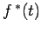
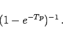
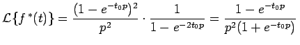

Inhalt Index DeskTop Bronstein

 Integraltransformationen Laplace-Transformation Eigenschaften der Laplace-Transformation Bildfunktionen spezieller Funktionen
Integraltransformationen Laplace-Transformation Eigenschaften der Laplace-Transformation Bildfunktionen spezieller Funktionen


Die Bildfunktion einer periodischen Funktion  mit der Periode  , die durch periodische Fortsetzung einer Funktion f(t) entsteht, ergibt sich aus der LAPLACE-Transformierten von f(t), multipliziert mit dem Periodisierungsfaktor
, die durch periodische Fortsetzung einer Funktion f(t) entsteht, ergibt sich aus der LAPLACE-Transformierten von f(t), multipliziert mit dem Periodisierungsfaktor
|  | (15.32) |
| Beispiel A |
|
Die periodische Fortsetzung von f(t) aus dem Beispiel B mit der Periode T = 2t0 ergibt mit . |
| Beispiel B |
|
Die periodische Fortsetzung von f(t) aus dem Beispiel C mit der Periode T ergibt |